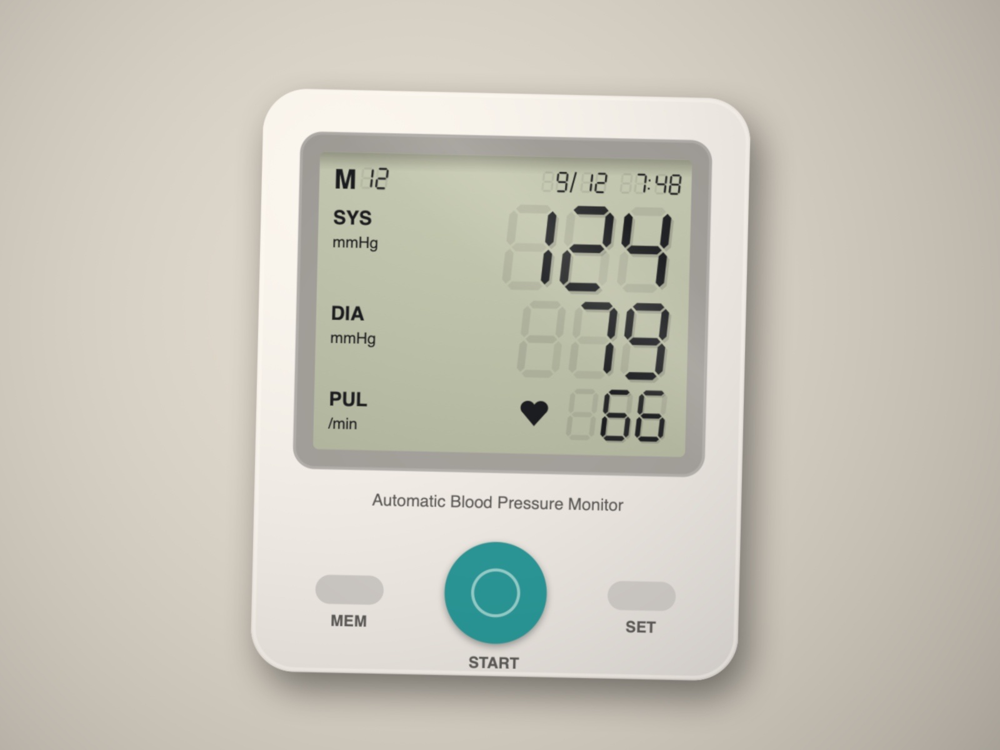
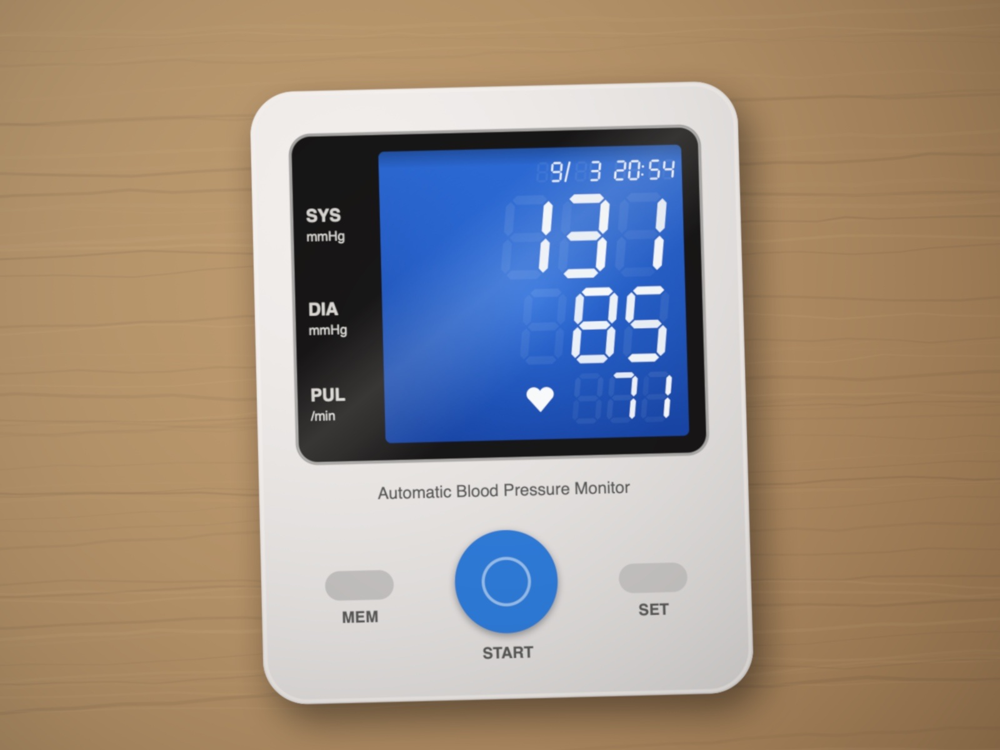
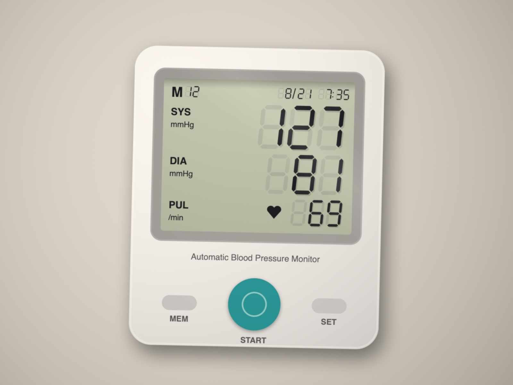
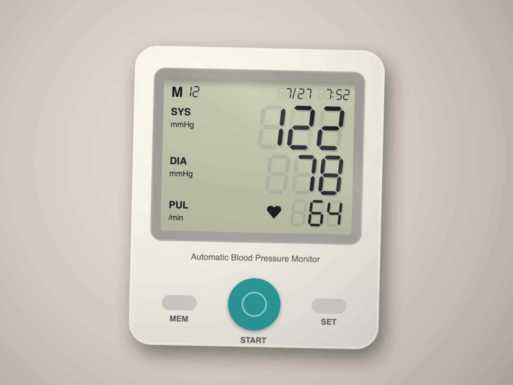

Test images
For App Review: photograph one of these images on another screen with Noteling's camera, or save them to Photos and use Import from Photos (Noteling Pro, sandbox purchase).
- Show an image full screen on a computer or tablet and point Noteling's camera at it; the numbers are read automatically.
- To import: long-press or right-click an image to save it to Photos, then choose Import from Photos in Noteling.
- These are computer-generated images of a generic blood pressure monitor, not real measurements.









Noteling is a personal diary for storing, organising and sharing blood pressure values you have already measured with your own monitor. It does not measure, diagnose or monitor any condition, does not recommend treatment and is not a medical device.